呦呼~2010年"小眼睛"開張大吉嘍！
（還沒破２月就發首篇，表現很好很好！完全沒有檢討的意思！ＸＤ）
感謝大家喜歡傻呼呼的摩卡卡，新的一年我們一樣用小眼睛陪大家看世界！
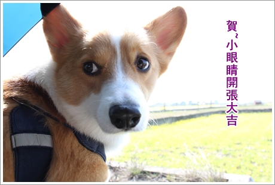
話說本週末起了個大早等謎題，等到人狗都又"肚菇"了好幾回還沒看到！
原來副會長早就早早就出發了！
我說卡內家真的是生活習慣有夠良好的， 就算假日也是超早起！
我如果可以不用離開床，我真的吃喝玩樂都可以在床上解決！
 殺到苗栗後，卡內麻叫我們找一塊有油菜花混波斯菊中等他們！
殺到苗栗後，卡內麻叫我們找一塊有油菜花混波斯菊中等他們！
呃..這對我們一家三口實在是太難惹啦！要我們看的話到處都有啊！
而且摩卡拔腦中浮現出的畫面還是向日葵咧！超白痴的！.gif")
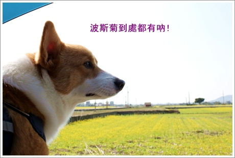
只好把摩卡卡放高高搜尋一下副會長一家的蹤跡嘍！
結果上面那隻手太短勾不到，下面那隻沒什麼路用又撐不久！.gif")
作罷!

終於跟副會長會合了，果然油菜花混波斯菊 的田地看起來豐富許多
狗子們完全被花海淹沒，我跟卡ㄋㄟ麻一人拉根繩子其實是在釣青蛙啦 ！
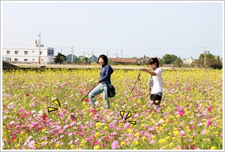
因為小捧油實在是太矮了，只好抱起來拍拍照！
不過蹲著時候一直聞到一股施肥的味兒.....
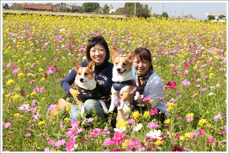
小傢伙們也超開心在花海裡亂跑亂衝的！
每次帶摩卡卡殺到苗栗都覺得超值得的，可以遠離那陰雨綿綿的台北享受陽光
而且愈跑愈覺得其實真的沒有很遠！哈哈
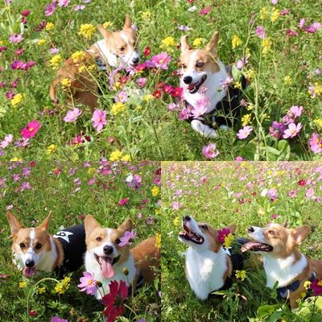
不過似乎苗栗的各大景點已經快被集滿了說！ （茶）
之後到了上田咖啡去吃午餐！
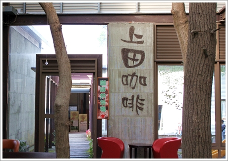
聽說有花季的時候這裡很容易客滿呢！
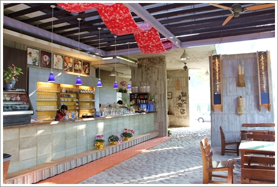
餐點我點了泡菜火鍋，卡內麻點了咖啡火鍋，偷喝了一口卡內麻的
味道還不賴耶！湯喝起來有淡淡的咖啡香，也很順口！
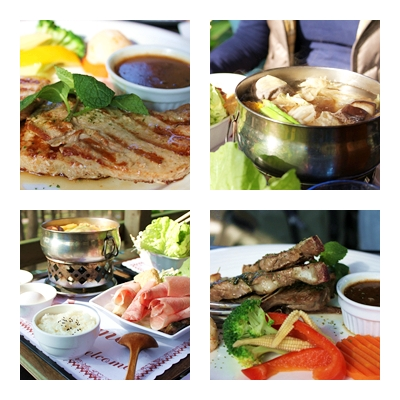
填飽肚子，久違的娘炮特訓開始啦！
副會長馬上進入狀況，發楞的摩卡卡馬上被卡ㄋㄟ賞了一記重拳！
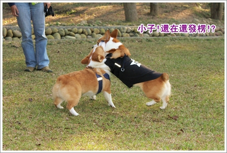
跑步的速度還是永遠慢人家一步！
不過慢歸慢，這張挺有速度感的！是吧～.gif")
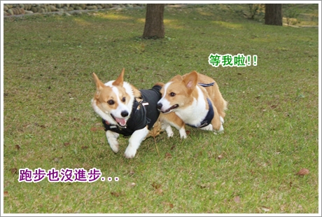
當然，被打趴的摩卡卡絕對是不可少的精彩畫面！
我發誓，我總有一天一定要拍到一堆摩卡卡打趴別人的照片啦！ 
(wuga~準備出動嘍!XDDDDD)
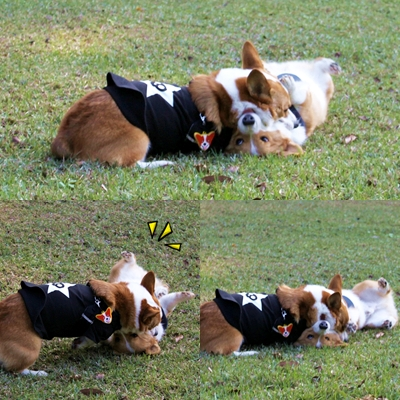
卡ㄋㄟ同學那天很來勁，最後居然還補個重口味的！好狠！
摩卡卡一整個被撂倒，哈哈哈～真的是弱爆了他！
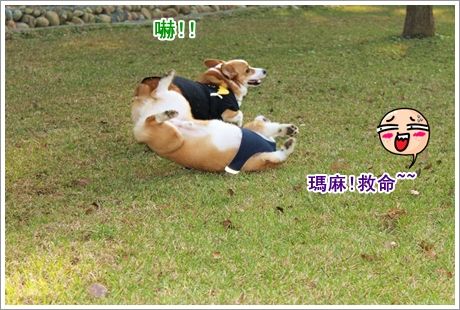
雖然打架完全不行，但不是我在說，這小傢伙還蠻會接飛盤的！
只是我買的飛盤都太爛了，不好接！而且我丟的也很爛！哈哈
（眾：有其母必有其子啊！）
對了！如果有推薦好接又好丟的飛盤請跟我說唄～甘蝦!^^
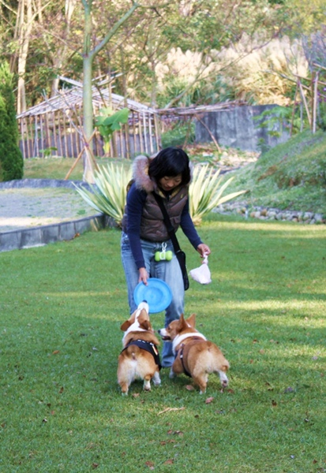
瞧瞧這小子臭屁的樣子，好帥！.gif")
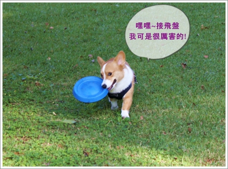
才誇講完這小子，馬上捕抓到一張讓我傻眼的照片！
在看那裡啊？許摩卡同學！！
有人接飛盤用屁眼接的嗎？
卡內母子倆都看傻惹！XDDDDD
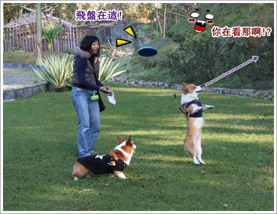
結束一連串摩卡卡的諧星照～來點氣質路線的！
今天幫他準備了一條小企鵝圍巾，哈哈
剛好搭配上田咖啡前的璋樹森林，來個冬季戀歌柯基版！
裴帥＝卡帥 
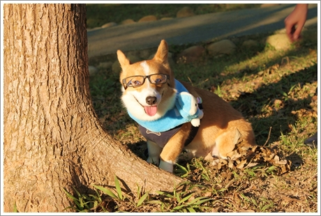
還蠻像那嘛回事的！
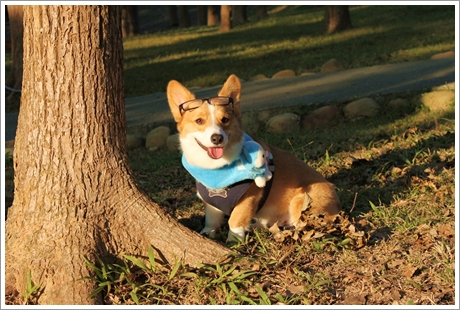
不過同樣的眼鏡換卡ㄋㄟ戴上，呈現出完全不同的氣質
卡ㄋㄟ就一副聰明大學生樣啊！但是表情是不是挺欠扁的！哈哈哈
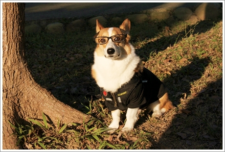
結束當天的行程！摩卡卡就被卡內麻外帶回家去安親嘍！
從小到大第一次離開瑪麻身邊外宿，說真的！我超想他的
不過看到卡內拔PO的照片，這小子過的很爽！根本就不用我擔心～
先附送一張小傢伙們洞房的畫面嘍！手上可以還戴著鑽戒呢！
至於生米煮成熟飯的照片，等卡內家嘍！
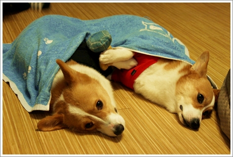